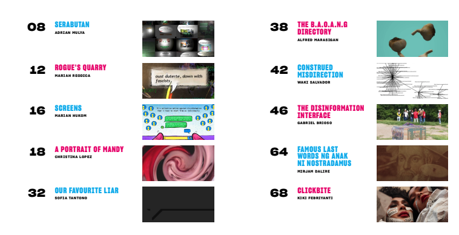

A4DRN的成立，來自於幾位在印尼和菲律賓積極推動藝術和數位權人士的發想；A4DRN爲一創新的解決方案，旨在因應有關惡意不實訊息的訊息失序與數位權問題。菲律賓的Mac Andre Arboleda、Bernice Soriano和Precious Marie Gunayon，以及印尼的Rangga Purbaya，在參加台灣民主實驗室舉辦的「公民社會對抗惡意不實訊息培訓者能力建構研習營」時，受到啟發而創建了此聯盟。
A4DRN的四位創始成員皆有提倡數位權及藝術的背景，他們在印尼和菲律賓公開徵召藝術家參加對抗惡意不實訊息的能力建構研習營，並希望他們能將所學轉化為藝術作品。他們收到了50多位藝術家的申請，根據申請者對數位權的了解，並確保多元代表性，最終篩選了10位藝術家（7位來自菲律賓，3位來自印尼）。
Marian Pastor Roces博士與Nicole Curato博士皆爲惡意不實訊息、政治、藝術和文化領域的領導者，他們爲10位藝術家提供惡意不實訊息的線上研習。研習結束後，成員有一個月的時間將他們獲得的新知識轉化為藝術作品。由於A4DRN團隊已接受有關惡意不實訊息、事實查核及其他相關領域的培訓，他們在藝術家的整個創作過程中，能夠給予指導。研習營的成果是一本公開在網路供 免費下載 的藝術出版品，主題爲惡意不實訊息的「對抗敘事」。此對抗惡意不實訊息的出版品爲一項可隨時存取的永久資源。
所有藝術家都被邀請參加一個虛擬的圓桌會議，展示他們的作品並與該地區的其他藝術家們進行想法上的交流。 圓桌會議在 Gather Town 舉辦，這是一個類似角色扮演遊戲的可玩虛擬空間。 來自多個國家、超過30 人參與了活動，其中包括社會運動者、策展人、學者、藝術家同業、倡議工作者和記者，共同幫助傳播有關 A4DRN 的內容及其工作。
Artists For Digital Rights Network 藝術家支持數位權聯盟是一個正在進行的項目，旨在跨越其在菲律賓與印尼的根基，讓來自其他國家的參與者參與進來。 對數位權感興趣的藝術家現在可以跨越國界的限制來維持對話和分享不同的機會，並在未來與數位權相關的計畫上進行合作與工作。